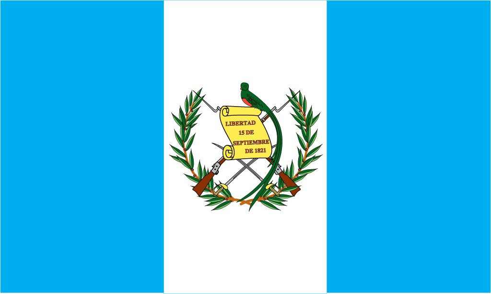

Símbolos patrios:
Historia:
Guatemala se independizó de España el 15 de septiembre de 1821.
Ha tenido conflictos y guerras civiles, la más significativa fue entre 1960 y 1996.
extensión territorial:
Guatemala tiene una extensión territorial de 108,889 km2.
Departamentos:
Tiene 22 departamentos, incluyendo Guatemala, Sacatepéquez y Petén.
Lugares turísticos: